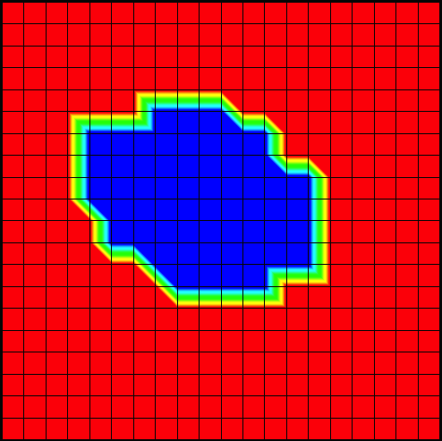

- componentThe image RGB-component to return, leaving this blank will result in a greyscale value for the image to be created. The component number is zero based, i.e. 0 returns the first (RED) component of the image.
C++ Type:unsigned int
Controllable:No
Description:The image RGB-component to return, leaving this blank will result in a greyscale value for the image to be created. The component number is zero based, i.e. 0 returns the first (RED) component of the image.
- dimensionsx,y,z dimensions of the image (defaults to mesh dimensions)
C++ Type:libMesh::Point
Controllable:No
Description:x,y,z dimensions of the image (defaults to mesh dimensions)
- fileName of single image file to extract mesh parameters from. If provided, a 2D mesh is created.
C++ Type:FileName
Controllable:No
Description:Name of single image file to extract mesh parameters from. If provided, a 2D mesh is created.
- file_baseImage file base to open, use this option when a stack of images must be read (ignored if 'file' is given)
C++ Type:FileNameNoExtension
Controllable:No
Description:Image file base to open, use this option when a stack of images must be read (ignored if 'file' is given)
- file_rangeRange of images to analyze, used with 'file_base' (ignored if 'file' is given)
C++ Type:std::vector<unsigned int>
Controllable:No
Description:Range of images to analyze, used with 'file_base' (ignored if 'file' is given)
- file_suffixSuffix of the file to open, e.g. 'png'
C++ Type:std::string
Controllable:No
Description:Suffix of the file to open, e.g. 'png'
- originOrigin of the image (defaults to mesh origin)
C++ Type:libMesh::Point
Controllable:No
Description:Origin of the image (defaults to mesh origin)
ImageFunction
Function with values sampled from an image or image stack.
Overview
Simulations often require the phase to be initialized or compared to existing micro-structure data, such as CT or SEM scans as shown in the figure. MOOSE includes a flexible, Function based method for accessing this type of data for use in initial conditions or other calculations. For example, Figure 1 is a reconstructed image of snow captured using cryospheric micro-CT scanner at the MSU Subzero Research Laboratory.

Figure 1: Mesh of 3D micro-CT data using ImageFunction.
Setup
To utilize the image reading portion of the phase-field module VTK must be enabled when building libMesh. Please see MOOSE FAQ for more information.
Examples
Single Image
Consider the simple image in Figure 2, reading this image is accomplished by including a ImageFunction in your input file.
[Functions<<<{"href": "../../syntax/Functions/index.html"}>>>]
[image_func]
type = ImageFunction<<<{"description": "Function with values sampled from an image or image stack.", "href": "ImageFunction.html"}>>>
file<<<{"description": "Name of single image file to extract mesh parameters from. If provided, a 2D mesh is created."}>>> = stack/test_00.png
[]
[]Figure 2: Example image input (stack/test_00.png).
This function may then be used just like any other function within MOOSE, for example, it may be utilized as an initial condition for a variable. The following input file syntax would use the function above as an initial condition for the u variable and create an initial mesh as shown in Figure 3.
[ICs<<<{"href": "../../syntax/ICs/index.html"}>>>]
[u_ic]
type = FunctionIC<<<{"description": "An initial condition that uses a normal function of x, y, z to produce values (and optionally gradients) for a field variable.", "href": "../ics/FunctionIC.html"}>>>
function<<<{"description": "The initial condition function."}>>> = image_func
variable<<<{"description": "The variable this initial condition is supposed to provide values for."}>>> = u
[]
[]
Figure 3: Mesh showing initial condition extracted from image in Figure 2.
The example image shown is 20 by 20 pixels as is the mesh (20 by 20 elements) to which the initial condition is applied. The meshed version looks slightly different than the original image because the initial condition is applied by sampling the image at each node within the mesh, which in this case matches with the pixel boundaries, so the value can sampled can easily vary due to floating point precision limitations.
Matching the mesh to the pixel dimensions is not a requirement, and not recommend. The main reason for building the ImageFunction object was to enable an arbitrary mesh geometry to be able to sample the image and adapt accordingly.
Beginning with a 2 by 2 element mesh and adding the following an adaptivity block to the input file results in the mesh shown Figure 4.
[Adaptivity<<<{"href": "../../syntax/Adaptivity/index.html"}>>>]
max_h_level<<<{"description": "Maximum number of times a single element can be refined. If 0 then infinite."}>>> = 5
initial_steps<<<{"description": "The number of adaptive steps to do based on the initial condition."}>>> = 5
initial_marker<<<{"description": "The name of the Marker to use to adapt the mesh during initial refinement."}>>> = marker
[Indicators<<<{"href": "../../syntax/Adaptivity/Indicators/index.html"}>>>]
[indicator]
type = GradientJumpIndicator<<<{"description": "Compute the jump of the solution gradient across element boundaries.", "href": "../indicators/GradientJumpIndicator.html"}>>>
variable<<<{"description": "The name of the variable that this side indicator applies to"}>>> = u
[]
[]
[Markers<<<{"href": "../../syntax/Adaptivity/Markers/index.html"}>>>]
[marker]
type = ErrorFractionMarker<<<{"description": "Marks elements for refinement or coarsening based on the fraction of the min/max error from the supplied indicator.", "href": "../markers/ErrorFractionMarker.html"}>>>
indicator<<<{"description": "The name of the Indicator that this Marker uses."}>>> = indicator
refine<<<{"description": "Elements within this percentage of the max error will be refined. Must be between 0 and 1!"}>>> = 0.9
[]
[]
[]
Figure 4: Mesh showing initial condition with initial adaptivity extracted from image in Figure 2.
Image Stacks
Image stacks or 3D images are also supported (see Supported File Types). For example, consider as set of images named test_00.png, test_01.png, ..., and test_19.png within a directory "stacked". To read these images the syntax below is used in the ImageFunction block. Again, using this data as an initial condition and using initial adaptivity, as shown above, results in the mesh shown in Figure 5.
[Functions<<<{"href": "../../syntax/Functions/index.html"}>>>]
[image_func]
type = ImageFunction<<<{"description": "Function with values sampled from an image or image stack.", "href": "ImageFunction.html"}>>>
file_base<<<{"description": "Image file base to open, use this option when a stack of images must be read (ignored if 'file' is given)"}>>> = stack/test
file_suffix<<<{"description": "Suffix of the file to open, e.g. 'png'"}>>> = png
[]
[]
Figure 5: 3D Mesh showing initial condition with initial adaptivity extracted from a stack of images similar to the image in Figure 2. The mesh is cropped in the vertical direction to show the internal structure.
It is also possible to limit the reader to a set of images using the "file_range" parameter, which may be set to a single value to read a single image or a range to read a subset of the images.
Image Processing
The VTK library includes a range of image filters and processing tools, some basic processing tools are included. However, a derivative class could easily be developed to expand upon these capabilities.
Component
By default, the RGB pixel data is converted into a single greyscale value representing the magnitude. This is accomplished using the vtkImageMagnitude class.
It is possible to select a single component rather than using the magnitude by setting the "component" parameter in the input file to a valid component number, which will be 0, 1 or 2 for RGB images.
Thresholding
Basic thresholding is accomplished using the vtkImageThreshold class. Thresholding requires three parameters be set in the input file:
"threshold": The threshold value to consider.
"upper_value": Image data above the threshold are replaced with this value.
"lower_value": Image data below the threshold are replaced with this value.
Shift and Scale
It is possible to shift and scale the image data, this is accomplished using the vtkImageShiftScale object. The "shift" parameter adds the given value to the image data and "scale" parameter multiplies the image data by the supplied value.
The order of application of the shift and scale are dictated by the VTK object, the documentation states: "Pixels are shifted (a constant value added) and then scaled (multiplied by a scalar)."
Image Flipping
Flipping an image along the major axis directions x, y, or z is performed using vtkImageFlip object. Three flags exists—"flip_x", "flip_y", and "flip_z"—which may be set in any combination.
Image Dimensions
By default, the image actual physical dimensions are set to the dimensions of the mesh. However, it is possible to set the dimensions of the image independently from using the origin and dimensions input parameters.
This allows for flexibility to how the ImageFunction is utilized. For example, a mesh could be defined to domain that is smaller than the actual image. Thus, if the ImageFunction dimensions are set to the larger domain, the mesh would only sample some portion of the image. Effectively, this feature can work on a cropped image, without needing to create a separate cropped image.
Supported File Types
Currently, two types of files are supported *.tif and *.png. However, *.tif files often do not read correctly with VTK, depending on the format of the file. So, if you experience problems reading *.tif files it may require changing the format to *.png. This can easily be done with any number of tools with ImageMagick being one of the most powerful.
[Functions<<<{"href": "../../syntax/Functions/index.html"}>>>]
[image_func]
type = ImageFunction<<<{"description": "Function with values sampled from an image or image stack.", "href": "ImageFunction.html"}>>>
file_base<<<{"description": "Image file base to open, use this option when a stack of images must be read (ignored if 'file' is given)"}>>> = stack/test
file_suffix<<<{"description": "Suffix of the file to open, e.g. 'png'"}>>> = png
[]
[]Input Parameters
- control_tagsAdds user-defined labels for accessing object parameters via control logic.
C++ Type:std::vector<std::string>
Controllable:No
Description:Adds user-defined labels for accessing object parameters via control logic.
- enableTrueSet the enabled status of the MooseObject.
Default:True
C++ Type:bool
Controllable:No
Description:Set the enabled status of the MooseObject.
Advanced Parameters
- flip_xFalseFlip the image along the x-axis
Default:False
C++ Type:bool
Controllable:No
Description:Flip the image along the x-axis
- flip_yFalseFlip the image along the y-axis
Default:False
C++ Type:bool
Controllable:No
Description:Flip the image along the y-axis
- flip_zFalseFlip the image along the z-axis
Default:False
C++ Type:bool
Controllable:No
Description:Flip the image along the z-axis
Flip Parameters
- lower_value0The value to set for data less than the threshold value
Default:0
C++ Type:double
Unit:(no unit assumed)
Controllable:No
Description:The value to set for data less than the threshold value
- thresholdThe threshold value
C++ Type:double
Unit:(no unit assumed)
Controllable:No
Description:The threshold value
- upper_value1The value to set for data greater than the threshold value
Default:1
C++ Type:double
Unit:(no unit assumed)
Controllable:No
Description:The value to set for data greater than the threshold value
Threshold Parameters
- scale1Multiplier to apply to all pixel values; occurs after shifting
Default:1
C++ Type:double
Unit:(no unit assumed)
Controllable:No
Description:Multiplier to apply to all pixel values; occurs after shifting
- shift0Value to add to all pixels; occurs prior to scaling
Default:0
C++ Type:double
Unit:(no unit assumed)
Controllable:No
Description:Value to add to all pixels; occurs prior to scaling